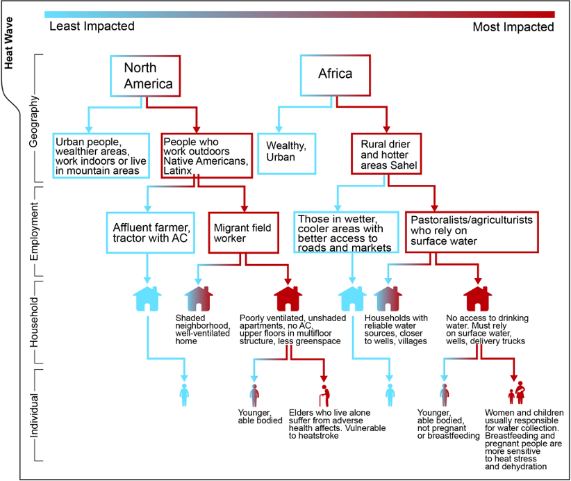

Understanding how extreme weather conditions impact people and communities is complex. Moreover, we’re not only interested in the overall impact of extreme weather on a population (for example, by identifying where droughts or heat waves occur), but also in which groups of people suffer disproportionately under these impacts. That is, when a drought occurs in a given community, who within that community experiences the most severe adverse outcomes?
Of course, we are also concerned with why these differences emerge. As we’ve described in posts throughout this blog (for instance, here, here, and here), answering this question requires careful attention not only to the particular conditions of place and of persons within that place, but also to the technical details involved in spatial and temporal aggregation.
In other words, we must consider who a person is and how they live in their space, and we must also design measures that capture variability in exposures and conditions that make effective use of the data we have.
A person-centered understanding of extreme weather impacts
Standard individual-level demographic variables (e.g., age, gender, marital status, etc.) are commonly used to help identify variability in extreme weather impacts and suffering. However, we can refine our understanding of vulnerability by also considering factors related to individual-level exposure and resources that might shape resilience and recovery from a disaster.1,2
Measuring person-level factors in the DHS
In the DHS, key measures that address an individual’s exposure are often their length of time in current residence and type of employment. These measures help to provide insight into what a person is used to dealing with and how sensitive their livelihoods are to environmental events.
You can use IPUMS DHS to browse groups of variables related to a given topic, like residency and employment.
For example, in an area prone to inconsistent rainfall, an established farmer who has lived there for the duration of their life is likely accustomed to this variability and less susceptible to a poor rainfall year than a farmer new to the community. The latter individual might face greater risks in the event of a poor rainy season given their lack of experience navigating or identifying those specific risks, normal to that place.
However, both of these individuals are likely more susceptible to adverse impacts on their lifestyles from a poor rainfall year than individuals in the community with less dependence on rainfall to generate food or income. Experience interacts with employment, as well: a non-farmer who is a long-time resident of the community may identify poor rainy conditions in very different ways than a farmer, regardless of their experience navigating weather conditions in that community.
Thus, considering an individual’s time spent living in a place alongside how that individual lives and works in a place helps to provide important information about why individual experiences vary in response to extreme weather events.
The importance of qualitative methods
The data from DHS and other related surveys help researchers sort out categories of greater or lesser risk, but they are not able to provide details on how those risks vary, why they vary, or the lived experience of individuals. To access this kind of detail, we rely on qualitative inquiry.3
Qualitative investigations in the form of interviews, focus groups, narrative accounts, and other strategies provide insight into the ways people understand and experience extreme weather events. Considering first-hand accounts of flooding in a given community, for example, provides insight into how flooding is measured, what resources individuals or households use to manage flooding risks, and also specific aspects of flooding that trigger behavioral change.
In a small focus group-type discussion my colleagues and I organized with humanitarian aid workers from several East African countries, where we proposed the seemingly simple question: “How do you know when an area has flooded?”. In fact, we encourage any blog readers to consider this question in their own lives. What is a flood in your community? At what point would you encourage people (and which people) to leave their homes or communities for safety? And at what point are you able to say that the flood has reached disaster levels?
The purpose of these focus groups was to help the aid workers explicitly identify the key criteria for measuring extreme weather impacts so they could more effectively find relevant survey data—for instance, from IPUMS DHS—that might address the risk factors associated with those impacts. This, in turn, would allow them to make more informed decisions when implementing interventions to improve health in the face of extreme weather events.
IPUMS DHS and environmental data provide excellent sources of data to quantify people’s experiences, but it is also important to understand how extreme weather impacts people on the ground based on their lived experiences. This is where qualitative investigations can come in to support the development of appropriate and place-based quantitative indicators capturing extreme weather risks and vulnerabilities.
The figure below highlights the importance of considering where a person lives, who a person is—their age, their gender, marital status, health status and so on—and how they interact with the landscape whenever describing extreme weather impact and risk.

This kind of conceptual framework developed through qualitative research can then be used to inform quantitative decisions in related analyses.
As we learned in our focus group discussion about floods, there is no single definition for an extreme weather disaster or event that is appropriate to use across individuals, communities, and times. This blog and the data provided through IPUMS provide excellent opportunities to create complex linked environment/health data sets, but the development of place-based indicators of risk comes from attention to the lived experiences of people on the ground.
Getting Help
Questions or comments? Check out the IPUMS User Forum or reach out to IPUMS User Support at ipums@umn.edu.